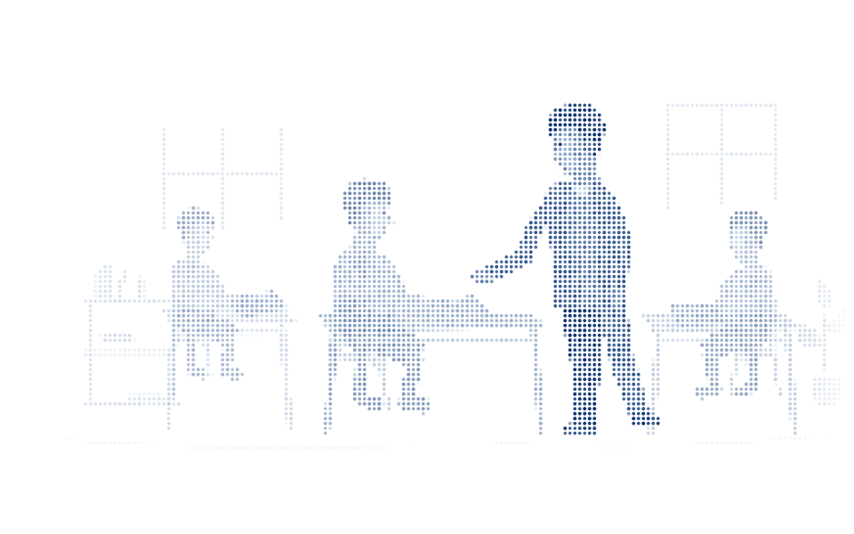

Thoughtfully rethinking assessment.
We’re working with educators to understand the friction in paper-based assessments. From digitising student work, to delivering useful feedback, we’re rethinking the entire workflow — so teachers can focus on what matters most: teaching.
